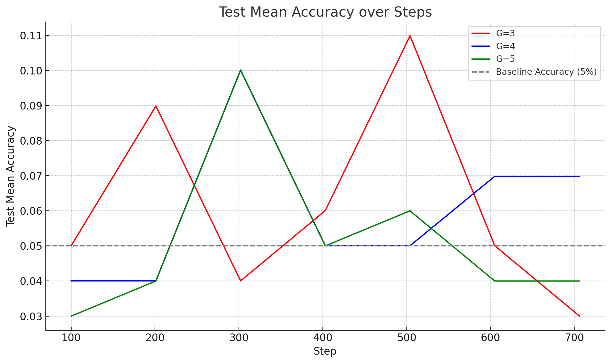

Aman
Sidhu.
Collision-Aware End-to-End Autonomous Driving in Long-Tail Scenarios
Thesis research under Prof. Narges Armanfard, applying Vision–Language–Action models to safety-critical autonomous driving. The work develops a multi-modal perception pipeline that fuses camera, LiDAR, and ego-action signals, then applies post-training, supervised fine-tuning followed by reinforcement learning, to improve action generation in the rare, hazardous events where standard imitation-trained policies tend to fail from temporal confusion.
Validation runs in CARLA across long-tail driving scenarios. Code and full results are not yet public; manuscript in preparation.
↗ Targeting NeurIPS / ICMLInventory Management via Demand-Conditioned Reinforcement Learning
Trained on- and off-policy RL agents (SAC and PPO) as inventory management policies in a simulated grocery store, with custom reward models synthesized from per-product time-series customer demand data. The methodological contribution: grounding agent rewards in realistic demand signals rather than synthetic reward shaping, so the learned policies reflect actual purchasing behaviour.
The framework reduced simulated food waste by up to 92% and increased store profit by up to 340% over baseline policies.
✓ SIMULATION 2025 · ANNSIM 2023Vision–Language–Action Model for Construction Automation
An end-to-end pipeline for grounded instruction-following in wheel-loader operation. The system runs YOLO-World detection over dashcam frames, formats the detections into a scene-grounding prompt, and feeds that into a LoRA-fine-tuned LLaMA 3.2 1B to produce contextual responses to commands like "Where should I go next?" or "Go to the nearest pile and fill the bucket."
The data pipeline auto-generates VQA training pairs by passing verified pile-detection frames through GPT-4o, then converts the resulting JSONL into HuggingFace dataset format for LoRA fine-tuning. The full inference path produces both annotated frames and structured JSON describing the scene and the model's grounded response.
Multimodal Domain Randomization via Gaussian Mixture Entropy Maximization
DORAEMON's approach to domain randomization uses a constrained optimization that balances entropy maximization against target-environment success rate, with parameters modeled by Beta distributions. I extended the framework with multimodal distributions via a Gaussian mixture model (GMM), dynamically adapting means, covariances, and mixing coefficients to give the parameter distribution greater expressiveness, particularly useful when the optimal randomization is not well-described by a single unimodal family.
Results show up to 10% success-rate gain and faster learning across MuJoCo control benchmarks compared to Beta-DORAEMON and standard baselines.
Code and full results are not yet public; manuscript in preparation.
Group Relative Policy Optimization on Countdown
A from-scratch reimplementation of Group Relative Policy Optimization, the RL post-training algorithm popularized by DeepSeek-R1, applied to a Qwen2.5-1.5B-Instruct model on the Countdown number-puzzle reasoning task. The setup: given a target integer and a small set of operands, the model must output a sequence of arithmetic operations that reach the target.
The implementation reaches a peak test accuracy of 11% (G=3), more than 2× the 5% baseline, with a group-size ablation across G∈{3,4,5}. Training exhibits the volatility characteristic of small-model RL on hard reasoning tasks, a useful empirical signal of where the algorithm is and isn't stable at this scale.

python scripts/train.py --base-model=Qwen/Qwen2.5-1.5B --dataset-type=HF --output-dir=./output
McGill Robotics — Mars Rover
Software Lead on a teleoperated Mars rover competing in the Canadian International Rover Competition (CIRC). The role has given me end-to-end familiarity with the ROS2 + embedded development: containerized builds, Jetson and Raspberry Pi deployment, multi-sensor integration for obstacle detection and localization, and coordination with the mechanical, electrical, and science divisions to meet system requirements. I also mentor 15+ undergraduates through weekly worksessions, and delivered workshops on ML and robotics fundamentals.
McGill University · MontrealSnake with Tabular Q-Learning
A self-directed dive into RL: a Pygame Snake environment wrapped to the Gymnasium interface, with a custom tabular Q-learning agent reaching 51 points after 500 episodes, plus drop-in support for Stable-Baselines3's PPO and A2C. The earliest piece of self-driven RL work in my portfolio, and the curiosity thread that eventually led to the my research at the iSMART lab.
View Repository ↗